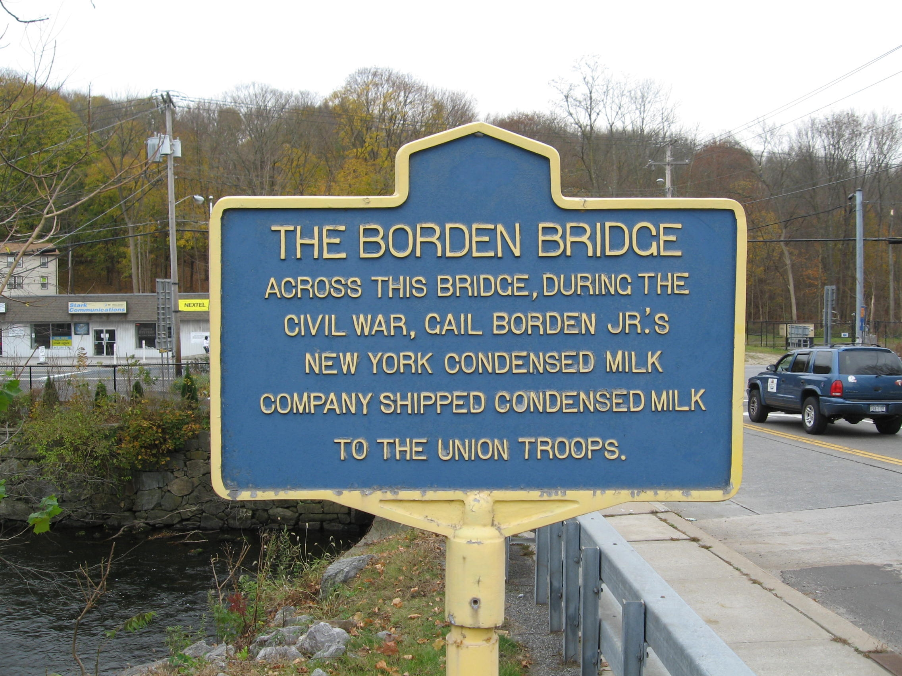

The Borden Bridge
The Main Street bridge over the East Branch of the Croton River, named for the dairyman whose New York Condensed Milk Company — built on the riverbank just across the bridge — turned Brewster from a railroad whistle-stop into a Civil War supply hub and, soon after, into the village it is today.

THE BORDEN BRIDGE
Across this bridge, during the Civil War, Gail Borden Jr.’s New York Condensed Milk Company shipped condensed milk to the Union Troops.
About this Marker
The bridge that bears the Borden name carries Main Street over the East Branch of the Croton River near the historic center of the Village of Brewster. On the far side of the bridge, on the level ground beside the river, stood the New York Condensed Milk Company’s Brewster works — the most consequential industrial operation in nineteenth-century Putnam County, and the reason the Village of Brewster grew up around it. The marker commemorates the bridge’s wartime use: the daily wagon traffic, between 1861 and 1865, of Borden’s condensed milk in tin cans, crossing the bridge from factory to railhead on its way to feed the Union Army.
Gail Borden Jr. and the technology of condensed milk
Gail Borden Jr. (1801–1874) had an unusually wandering career before he settled into the dairy business. He was a surveyor in the Republic of Texas, the editor of the Telegraph and Texas Register who in 1836 wrote the famous “Remember the Alamo” headline, and a customs collector at the port of Galveston under Sam Houston. He turned to inventing later in life, with an obsessive interest in food preservation. His first big commercial idea, a portable “meat biscuit” for sailors and frontier travelers, won an award at the 1851 London Great Exhibition but failed in the market. His second — a vacuum-pan method of evaporating fresh cow’s milk into a sweetened, shelf-stable concentrate — succeeded beyond any reasonable expectation. He patented the process in 1856 and founded the New York Condensed Milk Company with the financier Jeremiah Milbank in 1858.
The company’s first plant, at Wassaic in Dutchess County, struggled. The breakthrough came when Borden moved his main operations south to a site that combined three advantages a milk processor desperately needed: a strong, clean water source for cooling and steam; access to a large nearby population of dairy farms; and a direct rail connection to New York City. That site was the new Brewster’s Station of the New York and Harlem Railroad, opened in 1849 on what had been Walter Brewster’s farm. By 1861, the year the war broke out, Borden had moved his condensing operations to Brewster and built a plant on the east bank of the East Branch of the Croton River, immediately across this bridge.
The bridge, the wagons, and the war
The Civil War made Borden’s technology indispensable. Fresh milk could not be transported in summer without spoiling; condensed milk in tinned cans could be shipped anywhere, kept indefinitely, and reconstituted at field hospitals or in camp. The Union Army contracted with Borden for staggering volumes. The Brewster plant, in its wartime peak, was processing milk from a hundred-mile radius around the village: at full capacity, the Putnam County Historian reports, the plant required nearly 90,000 quarts of milk per day from the dairy farms of eastern Putnam and adjacent Connecticut and Dutchess. The wagon traffic across this bridge — raw milk coming in from the surrounding hills, finished cans going out to the rail station — was the daily pulse of Brewster’s wartime economy.
The plant also transformed Brewster itself. The need to move milk from farm to factory drove the construction of an improved network of roads radiating out from the village through Southeast, Patterson, and Kent — the same roads that, in many cases, are still the principal local routes today. The factory drew in workers; the railroad drew in business; the village around Brewster’s Station grew, became a recognized hamlet by the 1860s and 1870s, and was officially incorporated as the Village of Brewster in 1894. The Borden plant operated in Brewster, in various corporate forms, into the early twentieth century before the company’s operations eventually moved on. The plant buildings are gone today; the bridge, repeatedly rebuilt, remains.
The marker
The marker is in the standard New York State blue-and-yellow form but, unusually, carries no inscribed sponsor or date. The 1932 New York State Education Department program, which produced most of the markers of this design in Putnam County (including Col. H. Ludington at the state line, DeForest Corners, and Enoch Crosby in Carmel), nearly always identified itself in the lower-margin attribution band. The absence of a marked sponsor here is consistent with a later installation by either the Village of Brewster, a local civic association, or a Borden-related commemoration — but we have not identified the specific sponsor or date of this marker. We have left the attribution line blank in the transcription rather than guess.
Village of Brewster, NY
(41.394833°, −73.607233°)
Sources
- On-site photograph of the marker on the Main Street bridge over the East Branch of the Croton River, Village of Brewster.
- Putnam County Historian, “County Historian” web page — primary source for the daily-milk-volume figure (“nearly 90,000 quarts of milk each day from the farmers in eastern Putnam County”), the role of Borden’s plant in the Civil War supply chain, and the rail-driven transformation of mid-nineteenth-century Putnam.
- Brewster, New York, Wikipedia — for the 1848 origins of Brewster’s Station, the 1849 New York and Harlem Railroad extension, Walter Brewster’s 1850 first new house in the place, and the 1894 incorporation of the Village of Brewster. Consolidates Pelletreau, History of Putnam County, New York (1886).
- Gail Borden, Wikipedia — for Borden’s pre-dairy career in the Republic of Texas, the 1856 patent on his vacuum-pan condensed milk process, the 1858 founding of the New York Condensed Milk Company with Jeremiah Milbank, and the move of operations from Wassaic to Brewster.
- Putnam County Historian’s Office Digital Collection (New York Heritage portal) — period photographs of the Borden Condensed Milk factory workers in Brewster.
- Borden Bridge Historical Marker, Adventures Around Putnam (Steven Mattson, ed.) — secondary catalog entry confirming the marker location at the intersection of Main Street and Route 22.